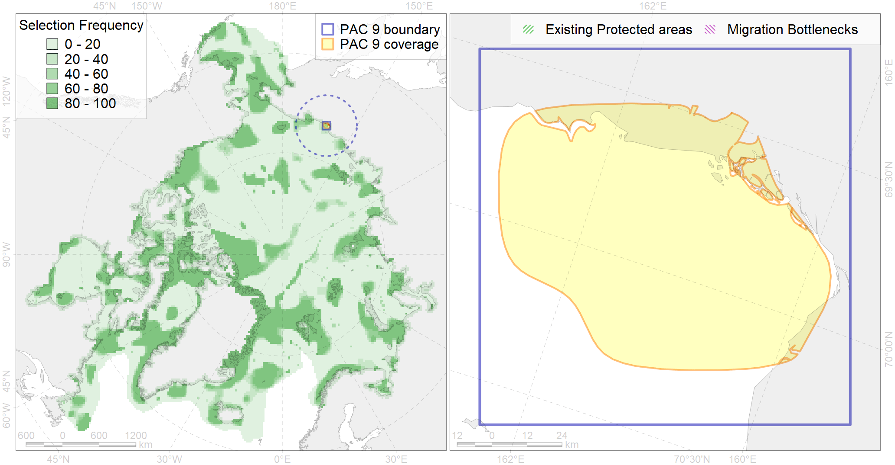

Region 9
Region 9
“ArcNet” scenario 33 achievement for region 9.
Use Accenter for advanced mode.

0
CFs inside of Region completely
2
CFs inside of Region at quarter
0
Complete-targets achievement by Region
1
Half-targets achievement by Region
| CF | Name | Target Achievement for Region | Proportion of Target Achievement in Region | Amount Proportion in Region |
|---|---|---|---|---|
| 8019 | East Siberian sea estuaries | 90.9% | 72.2% | 48.1% |
| 7012 | East Siberian Sea Kolyma and Chaun refugia, enclaves of the boreal North Pacific fauna | 39.0% | 30.8% | 32.4% |
| 8035 | Salt marshes of the East-Siberian Sea LME | 14.1% | 13.3% | 12.6% |
| 7103 | II.1.1.12. East Siberian Shelf Coastal domain | 44.5% | 23.3% | 9.4% |
| 6030 | Glaucous gull (Larus hyperboreus pallidissimus) breeding grounds | 10.9% | 1.8% | 3.8% |
| 6045 | Stellers eider (Polysticta stelleri) Pacific moulting&migration stopovers | 3.7% | 3.5% | 3.5% |
| 7044 | Western Chukchi transitional zone | 11.3% | 4.9% | 2.5% |
| 6011 | Brent goose (Branta bernicla nigricans) Asian breeding&moulting grounds | 6.7% | 2.5% | 2.3% |
| 3008 | Fast ice distribution in the Eastern part of the Laptev Sea and the East-Siberian Sea | 19.3% | 4.2% | 2.0% |
| 3040 | Marginal Ice Zone distribution in July in the East-Siberian Sea LME | 4.4% | 4.4% | 1.7% |
| 4092 | Estuarian (Indigirka-Kolyma) brackish –water fish complex | 16.4% | 5.4% | 1.7% |
| 4015 | Feeding area of the Broad whitefish (Coregonus nasus), American populations (F 19) | 2.9% | 2.5% | 1.6% |
| 2009 | Bearded seal whelping areas in the East-Siberian Sea | 7.1% | 4.7% | 1.4% |
| 4033 | Feeding area of the Dolly Varden (Salvelinus malma) (F 30) | 6.5% | 1.3% | 1.3% |
| 4010 | Feeding area of the Muksun (Coregonus muksun) (F 15) | 2.3% | 2.3% | 1.3% |
| 4014 | Feeding area of the Siberian whitefish (Coregonus pidschian) (F 18) | 3.1% | 2.0% | 1.3% |
| 4034 | Feeding area of the Taranetz’s Char (Salvelinus taranetzi) (F 31) | 2.3% | 1.4% | 1.2% |
| 4018 | Feeding area of the Vendace, Least cisco (Coregonus sardinellа), Euro-Asian populations (F 20) | 2.6% | 1.4% | 1.0% |
| 4021 | Feeding area of the Inconnu (Stenodus leucichthys nelma), Euro-Asian populations (F 22) | 1.9% | 1.6% | 1.0% |
| 7104 | II.1.1.13. East Siberian iInner shelf | 8.5% | 2.2% | 0.8% |
| 4008 | Feeding / nursery area of the Arctic Cisco (Coregonus autumnalis), Eurasian populations (F 14) | 1.3% | 1.2% | 0.8% |
| 4052 | Range of the Fourhorn Sculpin (Myoxocephalus quadricornis) (F 45), American populations | 15.9% | 1.1% | 0.8% |
| 4036 | Distribution of the Borisov’s Arctic cod (Arctogadus borisovi) (F33) | 3.6% | 1.6% | 0.8% |
| 4024 | Distribution of the Chum Salmon (Oncorhynchus keta) (F24) | 7.7% | 0.9% | 0.8% |
| 9030 | polar bear denning areas of LV (Laptev Sea) subpopulation | 0.8% | 0.8% | 0.8% |
| 6066 | Common eider (Somateria mollissima v-nigrum) breeding&moulting grounds | 1.1% | 1.1% | 0.6% |
| 4006 | Feeding/nursery area of the Pacific rainbow smelt (Osmerus dentex) (F12) | 1.7% | 0.6% | 0.5% |
| 4077 | Fish zoogeography, Arctic Region, High-Arctic Shelf Province, Laptev – East-Siberian District (10D) | 2.3% | 1.2% | 0.5% |
| 4023 | Feeding/migration area of the Pink Salmon (Oncorhynchus gorbuscha), native distribution (F23) | 4.4% | 0.7% | 0.4% |
| 4058 | Range of the Arctic flounder (Liopsetta glacialis) (F48) | 4.2% | 0.5% | 0.4% |
| 4004 | Range of the Pacific Capelin (Mallotus villosus catervarius) (F11) | 8.3% | 0.6% | 0.4% |
| 4070 | Local forms of the White-Sea herring (Clupea pallasii) (F8) | 0.9% | 0.5% | 0.3% |
| 4042 | Range of the Saffron cod (Eleginus gracilis) (F 36) | 2.5% | 0.4% | 0.2% |
| 4037 | Distribution of the Glacial cod (Arctogadus glacialis) (F34) | 0.8% | 0.2% | 0.1% |
| 9012 | polar bear of the LV (Laptev Sea) subpopulation distribution | 0.3% | 0.2% | 0.1% |
| 4041 | Range of the Polar Cod (Boreogadus saida) (F35) | 0.2% | 0.1% | 0.0% |
| 5112 | Arctic Cetaceans (beluga, bowhead, narwhal) winter habitats as predicterd by MIZ | 0.0% | 0.0% | 0.0% |